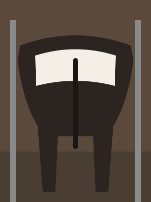

How it works


Camera not available, using a sample cow
Stand behind the cow and line her hips up with the outline.
Estimate
Targets under review
By body area
You have the final say. Use − and + to adjust.